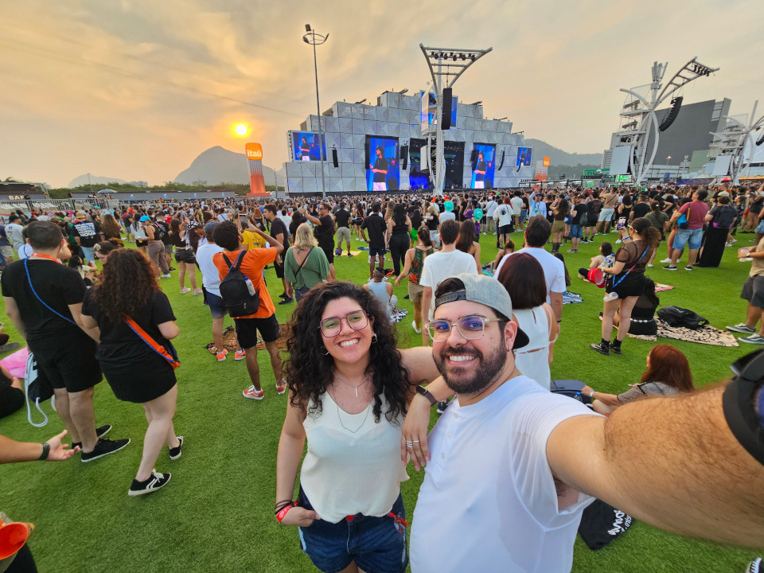
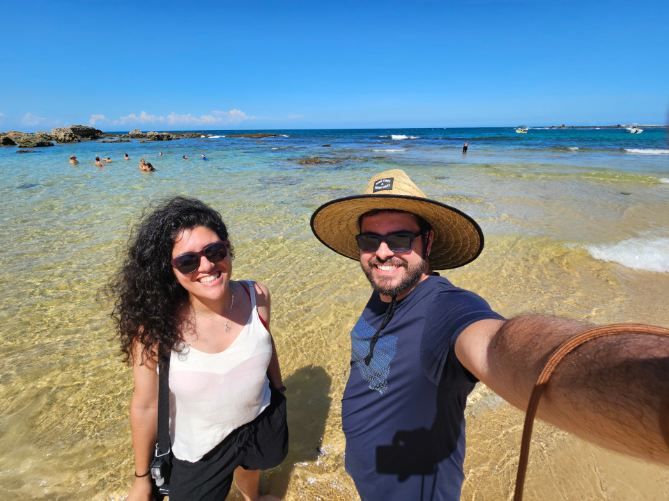
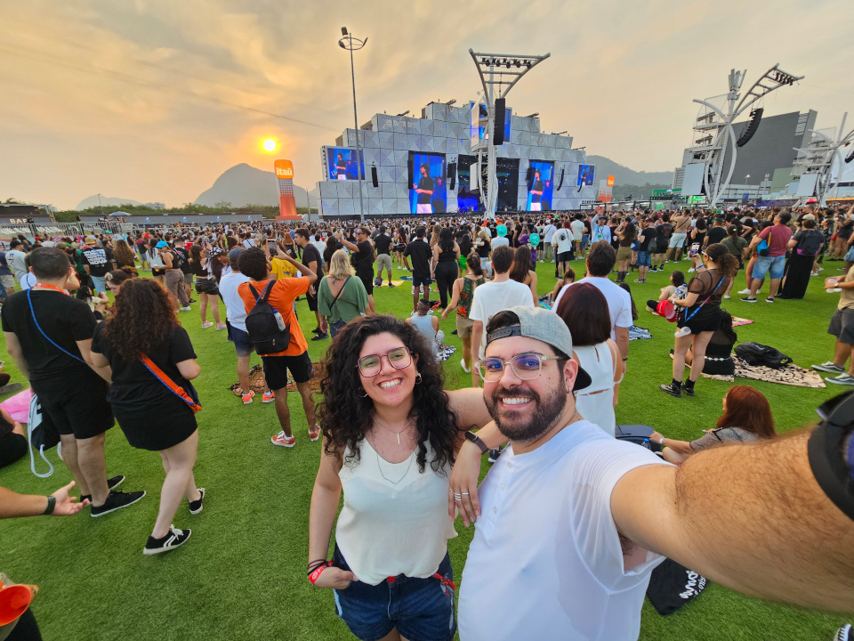
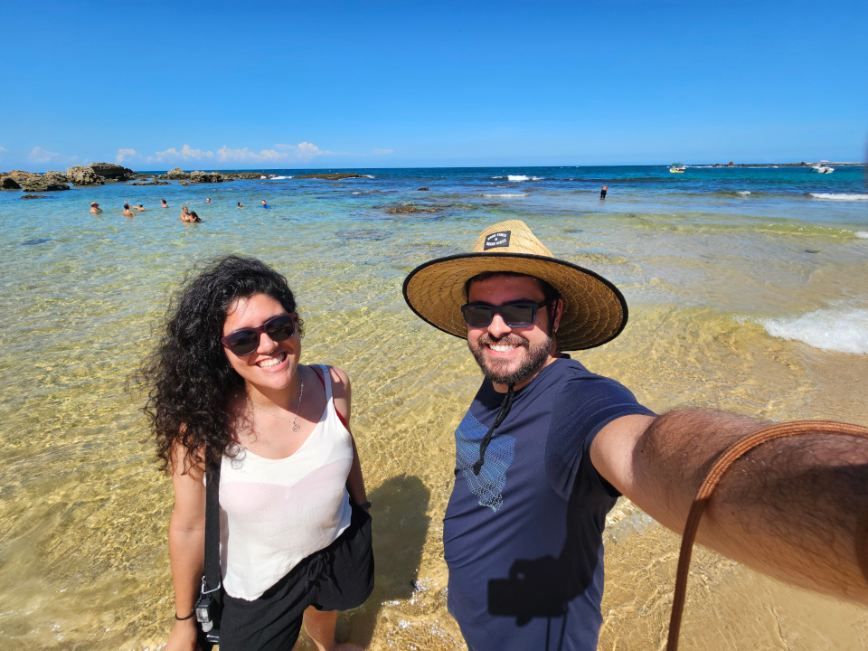
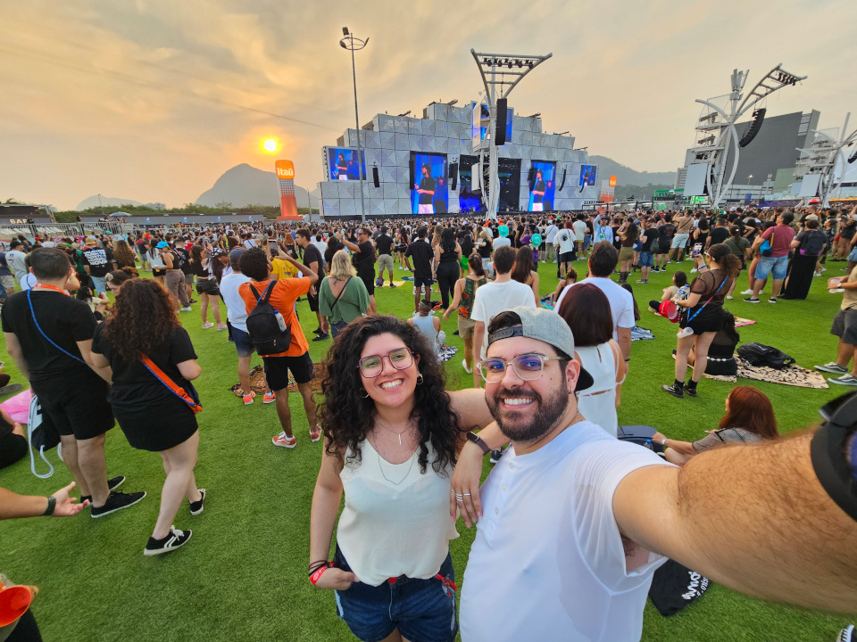
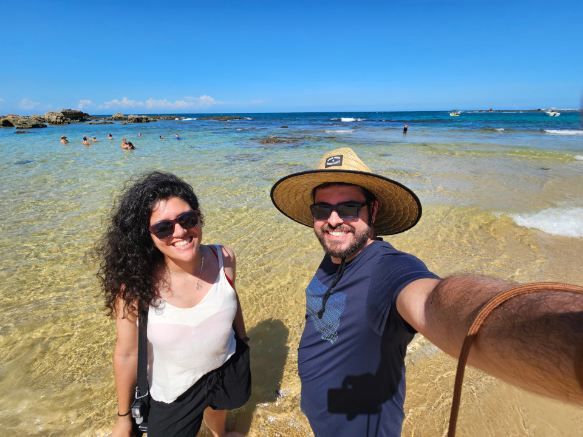
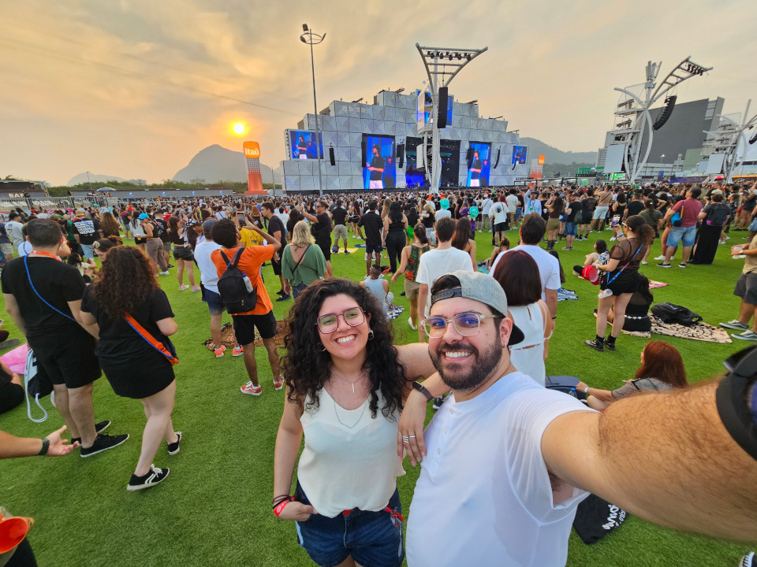
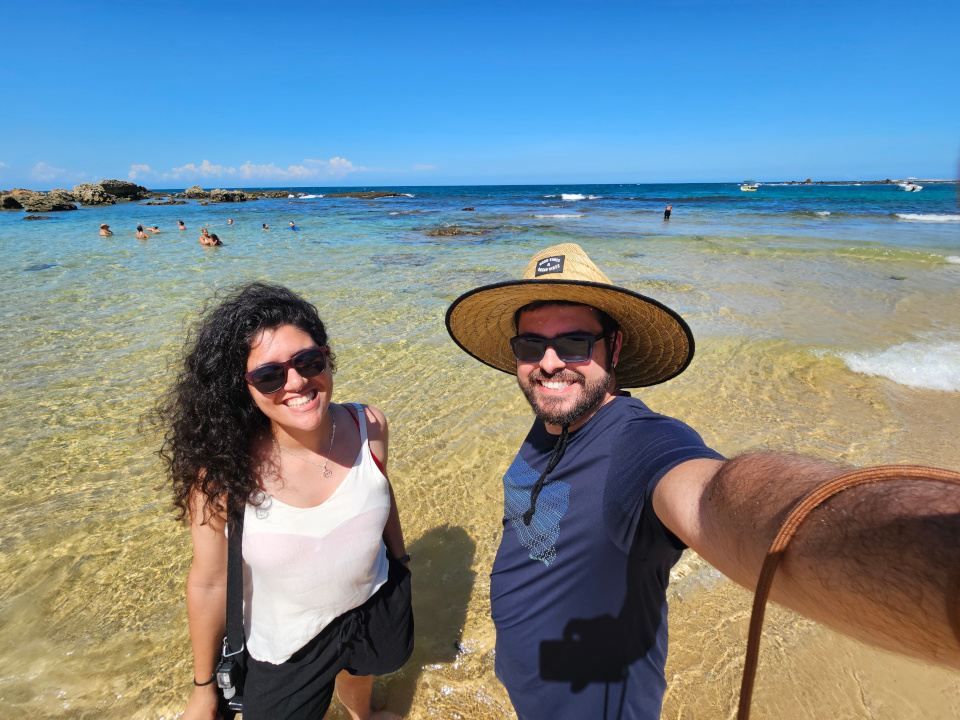

Sempre teremos esse espacinho para lembrar de quanto tempo estamos juntos, das coisas que fizemos e dos lugares que já visitamos. Afinal, eu nem vejo o tempo passar quando estamos juntos.
00:00 / 00:00